Hackathon
🏆 2nd Place — Promise Regionalisation Hackathon — IoT Smart Irrigation System
Promise Regional Program (Tunisia–USA) · Gabes, Gafsa, Medenine & Tataouine — January 2024
The brief was simple: 24 hours, one idea, one working prototype. The problem we chose
was anything but simple — water waste in agricultural irrigation in
a country where drought is not a future threat but a present reality. Tunisia loses
enormous quantities of water to inefficient irrigation: fields flooded when they're
already saturated, pumps running when no crop needs them, no real-time visibility
for farmers about soil conditions. Our team of engineers set out to change that in
one night.
I led the IoT hardware and automation layer. While teammates designed
the mobile application and shaped the business concept, I built a physical device that
read soil moisture, temperature, and water flow data through sensors, processed it
through a C++ program running on a microcontroller, and sent real-time readings to
a cloud database. The app pulled from that database to give farmers a live dashboard
of their field conditions on their phones. But the system didn't just inform — it
also acted autonomously: when sensor values crossed defined thresholds,
the device triggered automated irrigation responses without waiting for human input.
Inform and act. That was the architecture.
By the time we walked onto the stage, we had a working demo of the device, a live
data feed to the app, and a video of a real prototype with half its functions
operational. The jury awarded us 2nd place at the national level
— competing against teams from Gabes, Gafsa, Medenine and Tataouine under the
Promise Regional Program, a Tunisian–American initiative supporting
innovation in the startup ecosystem. Twenty-four hours. One problem. One solution
that worked.
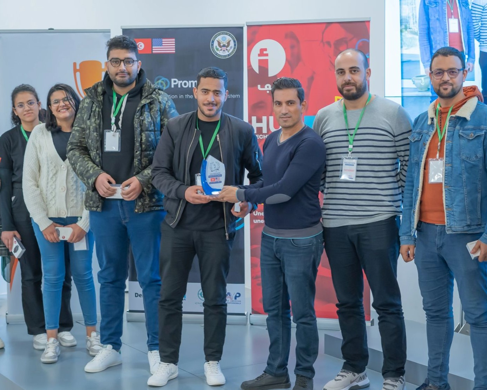
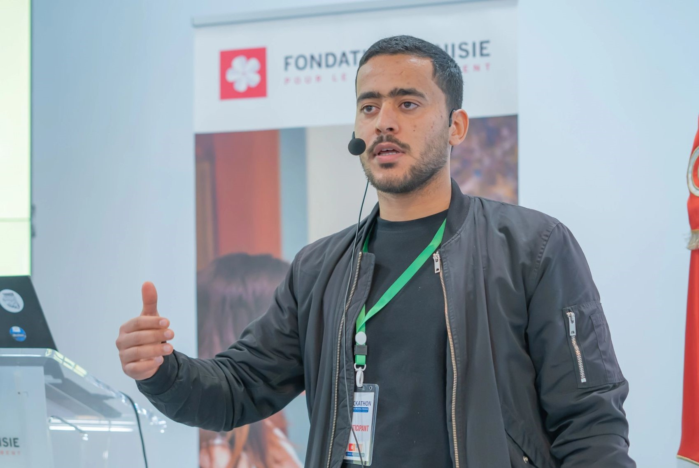
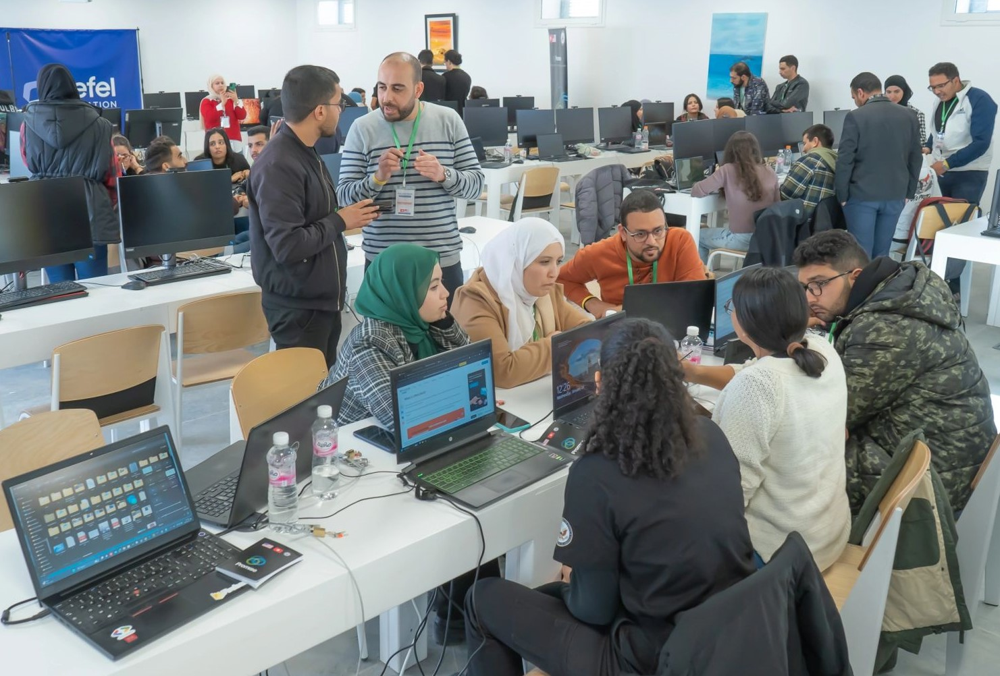
- Won 2nd place nationally at the Promise Regionalisation Hackathon — a Tunisian–American innovation program covering Gabes, Gafsa, Medenine and Tataouine — competing against multidisciplinary teams across the region.
- Conceived and built an IoT-based smart irrigation system targeting water waste in Tunisian agriculture — the concept was designed, prototyped, and pitched within a single 24-hour sprint.
- Designed and implemented the full hardware and automation layer: sensor reading (soil moisture, temperature, water flow), microcontroller-based C++ processing, and two operating modes — autonomous automated responses to threshold events, and real-time data streaming to a cloud database.
- Connected the IoT device to a mobile application via a cloud database, giving farmers live field condition monitoring on their smartphones — soil data visible in real time without any manual measurement.
- Presented a live demo of the connected device during the pitch, supported by a video of a physical prototype with 50% of target functions operational — demonstrating a viable, buildable solution to the jury.
- Delivered the final startup pitch on the main stage before a regional audience, jury, and Promise/Fondation Tunisie representatives — communicating both the technical architecture and the real-world impact of the solution.
Gafsa
Training Assistant — "Build & Fly" Glider Workshop
Club Aéronautique, Faculté des Sciences de Gafsa — September 2023
Not every engineering lesson happens in front of a control cabinet. This one happened
outside, under an open sky, watching a hand-built glider trace a long, slow arc through
the Gafsa air. The Club Aéronautique invited me to assist in a training session with one
clear challenge: build a glider from scratch, and make it fly as long as possible.
The session started in the classroom — covering the theoretical foundations that make fixed-wing
flight possible: lift, drag, thrust, gravity, and the critical concept of the
centre of gravity. Participants learned why a wing generates lift, how
the position of the CG determines whether a glider will climb, stall, or dive, and why
the choice of materials and geometry directly affects glide ratio. The electric motor
theory session covered brushless motors — the motor type used in RC aircraft —
explaining the stator/rotor principle, speed-to-weight ratio, and why brushless drives
dominate in aerospace applications.
Then the tables were cleared and the real work began. Participants were guided through
cutting, measuring, and assembling their glider airframes — balsa and foam shapes
transformed into flying wings with ruler, cutter, and careful hands. The final act was
a gliding duration competition: each team launched their aircraft and
the longest sustained flight won. Engineering stopped being abstract the moment the
gliders left their hands — every miscalculated centre of gravity, every asymmetric wing,
showed up immediately in the air.
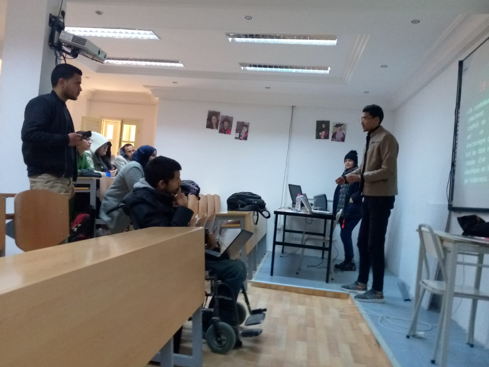
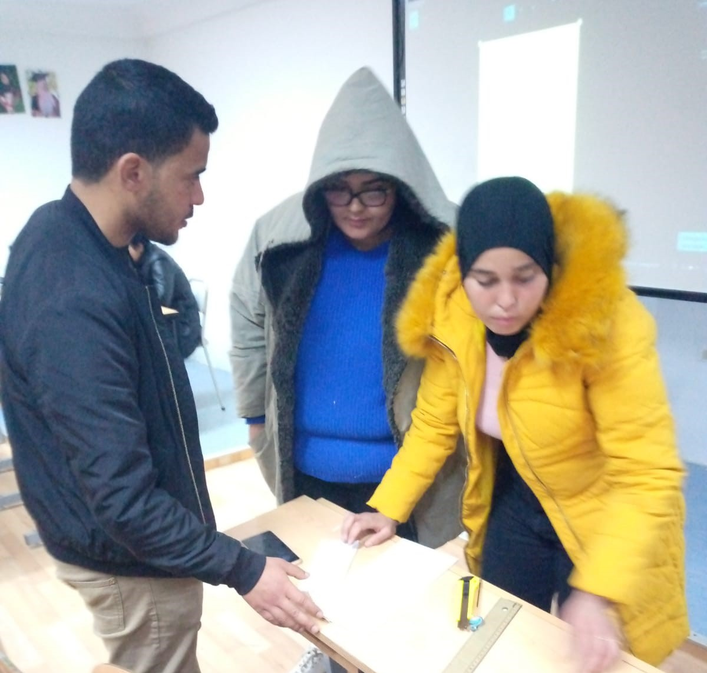
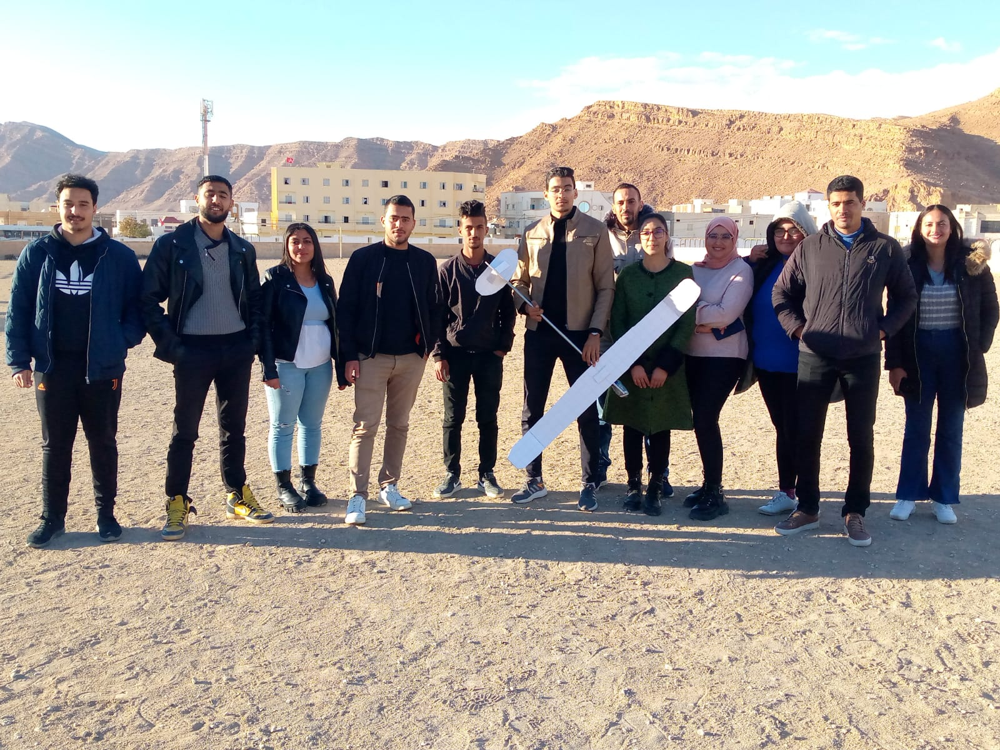
- Assisted in delivering a hands-on glider workshop at the Club Aéronautique, Faculté des Sciences de Gafsa — covering both theoretical aerodynamics and practical aircraft fabrication.
- Delivered the theory session covering flight fundamentals: lift, drag, thrust, gravity, centre of gravity positioning, glide ratio, and the impact of wing geometry on flight duration.
- Presented brushless motor theory — stator/rotor principles, power-to-weight advantages, and RC aircraft propulsion — as part of the aeronautical systems introduction.
- Guided participants through the full glider build process: measuring, cutting, and assembling balsa/foam airframes with correct CG placement for stable, sustained glide.
- Organized and ran a gliding duration competition as the practical capstone — each team launched their hand-built aircraft and results were judged on flight time, making every design decision immediately visible in the air.
- Reinforced the connection between theoretical principles and physical results — participants experienced directly how centre of gravity errors, wing asymmetry, and material choices translate into flight behaviour.
Gafsa
Trainer — "Smart Home" Embedded Systems Workshop
Club Aéronautique, Faculté des Sciences de Gafsa — February 11–12, 2023
About six months after graduating, I wasn't looking for the next thing to learn —
I was looking for the next thing to teach. The Club Aéronautique of
the Faculté des Sciences de Gafsa gave me that stage. Together with my assistant,
I designed and delivered a 2-day hands-on workshop on embedded systems and
Smart Home fundamentals, open to over 30 students with no prior hardware
experience.
The curriculum was built from first principles: what is a processor, what are sensors
and actuators, how does a microcontroller read the physical world and respond to it.
From there we moved to the workbench — every participant got hands-on with
Arduino Uno and Mega boards, wiring up sensors one by one:
ultrasonic distance, infrared, gas, and DHT temperature-humidity. For each sensor,
the method was the same — understand the signal type (analog vs. digital), build the
mounting circuit, write a dedicated reading function, then nest that function inside
a larger program. Outputs followed the same logic: driving an LCD display,
triggering a buzzer, controlling a servo motor via a
dedicated shield, and finally cutting the wire entirely with a
Bluetooth module to complete the Smart Home concept.
Standing at the front of that amphitheatre, explaining to 30 people how to make a
sensor talk to a microcontroller, I realized that teaching and engineering are not
separate things — explaining a concept clearly enough for someone else to build it
is the deepest form of understanding it yourself.
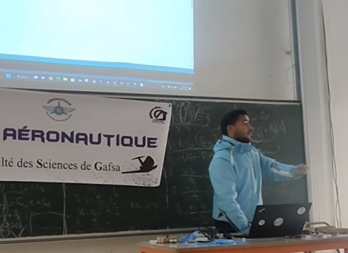
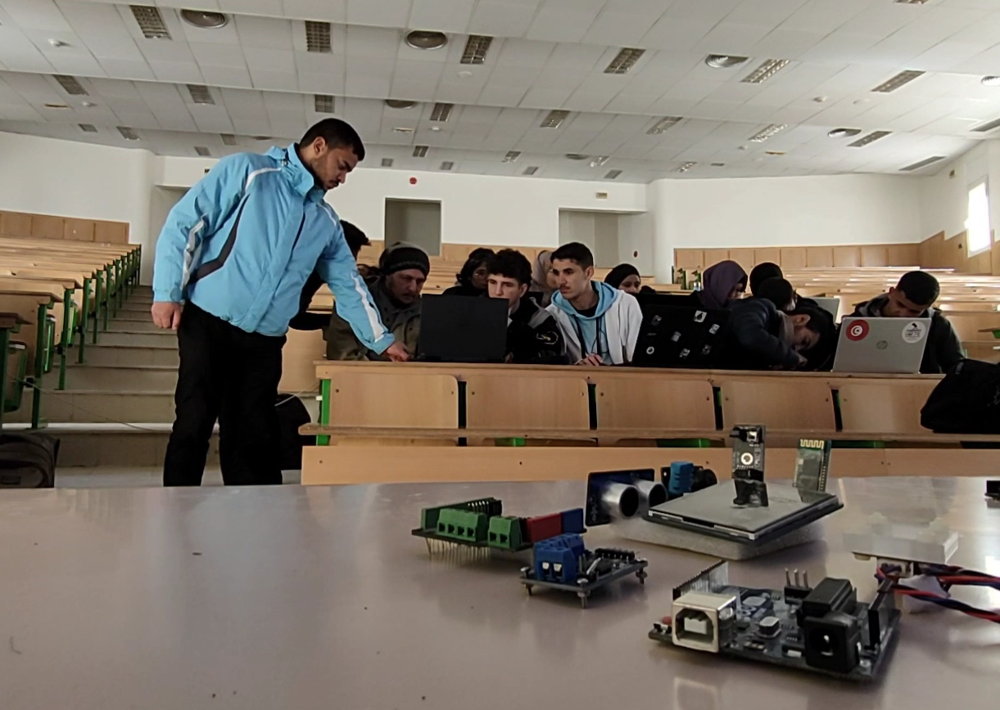
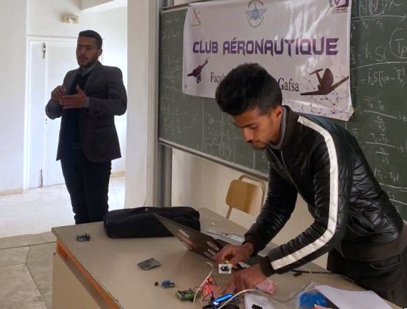
- Designed and delivered a 2-day hands-on embedded systems workshop titled "Smart Home" at the Club Aéronautique, Faculté des Sciences de Gafsa — training over 30 students with no prior hardware experience.
- Built the full curriculum from scratch: processor architecture basics, sensor and actuator classification, analog vs. digital signal theory, Arduino IDE setup, and modular programming methodology.
- Taught participants to wire, read, and program 4 sensor types — ultrasonic, infrared, gas, and DHT temperature-humidity — guiding each student from circuit mounting to a working, tested code function.
- Applied a modular programming approach: participants first wrote isolated sensor-reading functions, then learned to nest and call them inside a unified main program — building real software architecture intuition.
- Covered output devices including LCD display, buzzer, and servo motor (via dedicated shield), and integrated a Bluetooth module to demonstrate wireless control as the Smart Home capstone concept.
- Coordinated logistics, hardware preparation, and session pacing alongside an assistant trainer — managing a 30+ person audience across 2 full days in a university amphitheatre setting.
Maintenance
Graduation Internship — Maintenance Management & Production Line Study at Les Ciments de Bizerte
Société des Ciments de Bizerte (SCB) — Baie de Seba Plant, April–October 2022
My graduation project took me inside one of Tunisia's largest cement production facilities —
Les Ciments de Bizerte — for a 6-month deep dive into industrial maintenance
management. The mission was clear but challenging: the existing maintenance feedback system
generated data with no structure, no KPIs, and no path toward scientific analysis. Breakdowns
were recorded, but causes were never linked to effects. There was no foundation for
DEMIAC — the structured failure analysis methodology that turns raw maintenance
history into actionable decisions.
The first step was to redesign the feedback system from scratch — building a new form structure
that connected every failure to its machine, its cause category, its consequence, and its
corrective action. This new system was piloted across the ligne d'ensachage et expédition
— the cement bagging and dispatch line — which I had reorganized into 5 functional sectors:
storage, feeding, bagging, palletizing, and expedition. Each sector was mapped, its machines
inventoried, and their datasheets studied. After several months of data collection under the new
system, enough history existed to extract real failure patterns and apply targeted maintenance
strategies per machine family.
But this internship was never just about paperwork. Alongside the system redesign, I worked
directly with the maintenance team on the floor — measuring worn components with calipers,
diagnosing toothed belt and rack degradation on the BEUMER robotic palletizer,
replacing failed bearings on screw conveyors and bucket elevators, and opening up the
Haver & Boecker Roto-Packer's MEC III control system to understand its
A/D, CPU, and I/O modules. From a Pepperl+Fuchs AS-i field programmer to a 24V DIN rail
power supply swap — every intervention was both a maintenance action and a lesson in how
automation, mechanics, and reliability engineering intersect on a real industrial line.
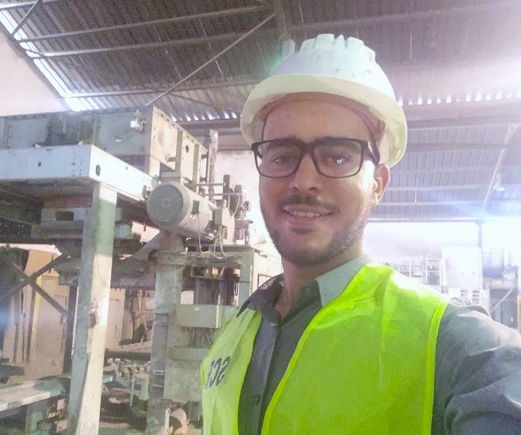
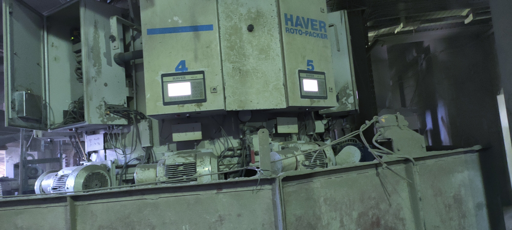
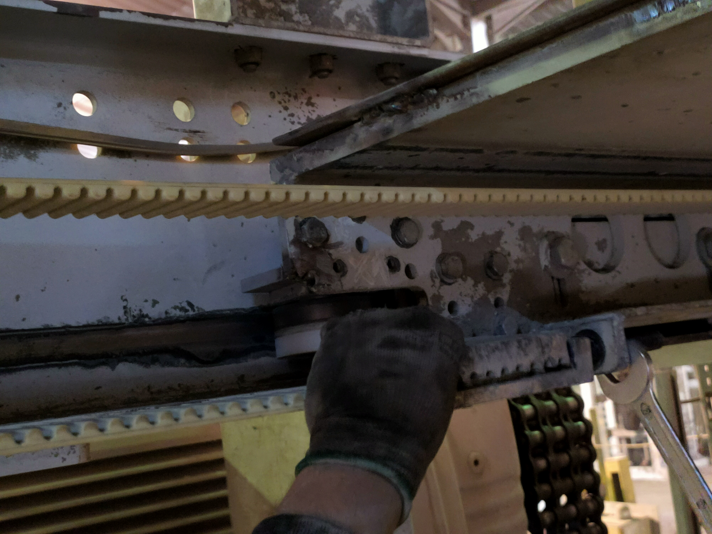
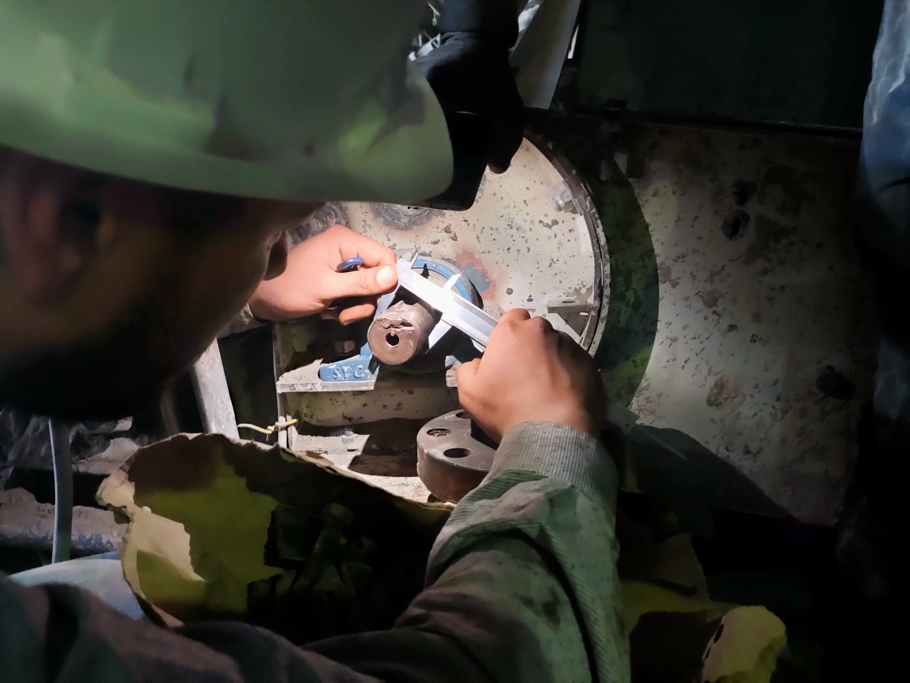
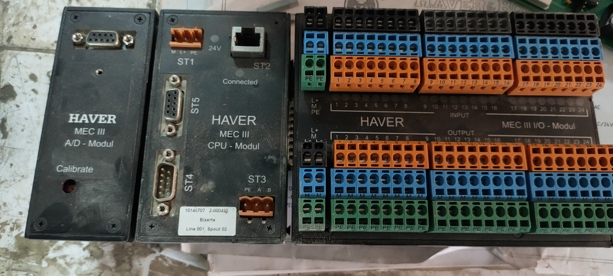
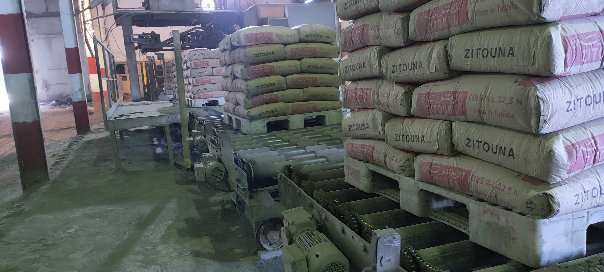
- Carried out a 6-month graduation internship at Les Ciments de Bizerte (SCB), focused on redesigning the maintenance management system for the cement bagging and dispatch production line.
- Diagnosed the existing maintenance feedback system as structurally inadequate for DEMIAC analysis — no cause-effect linkage, no KPIs, no failure pattern extraction — and designed a replacement system from the ground up.
- Mapped and reorganized the ligne d'ensachage et expédition into 5 functional sectors (storage, feeding, bagging, palletizing, expedition), inventoried all machines, and studied their technical datasheets to establish a complete system baseline.
- Piloted the new feedback system across all 5 sectors over several months, then extracted failure history to identify recurring breakdown patterns and define targeted maintenance strategies per machine family.
- Worked hands-on with the maintenance team on the BEUMER robotic palletizer — inspecting and documenting toothed belt and rack degradation, measuring component wear with calipers, and participating in corrective interventions.
- Intervened on the Haver & Boecker Roto-Packer automation system — disassembled, inspected, and diagnosed the MEC III A/D, CPU, and I/O modules, and replaced a failed 24V DIN rail power supply to restore packer operation.
- Operated a Pepperl+Fuchs AS-i handheld programmer to address sensor network faults on the bagging line — gaining direct experience with industrial fieldbus diagnosis.
- Performed mechanical maintenance across the full line: bearing replacement on screw conveyors and bucket elevators, shaft inspection, and vibrating screen component checks — each intervention documented in the new feedback system.
QHSE
Formation ISO 14001:2015 — Environmental Management & Certified Attestation
Engineering Geeks Club (EGC) — QHSE Training Series, March 13–14, 2021
Two weeks after ISO 9001, the QHSE training cycle continued. The second session
brought Mr. Ali Ouni back to deliver a 2-day professional training
on ISO 14001:2015 — the international standard for
Environmental Management Systems.
The training covered the full structure of the standard: organizational context,
interested parties, environmental aspects and impacts, legal compliance obligations,
objectives and planning, operational control, and Chapter 9 — Performance
Evaluation — covering surveillance, measurement, analysis, and internal
audit methodology. This is the same framework used by certified industrial
facilities worldwide to manage their environmental footprint.
At the end of the training, I received a professional attestation
directly from Mr. Ali Ouni — a formal certificate of completion signed by the
trainer himself. As the organizer and participant, that certificate represented
something beyond a training session: it was proof that the standard we taught
was one we took seriously enough to be evaluated on ourselves.
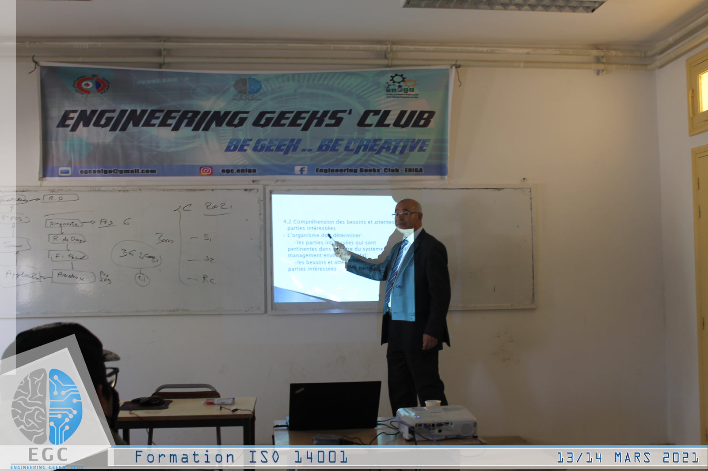
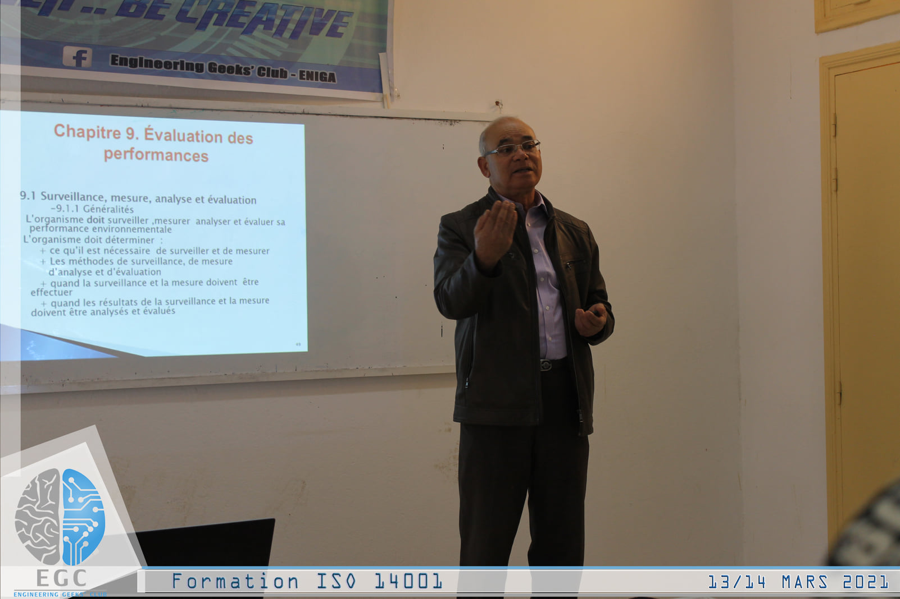
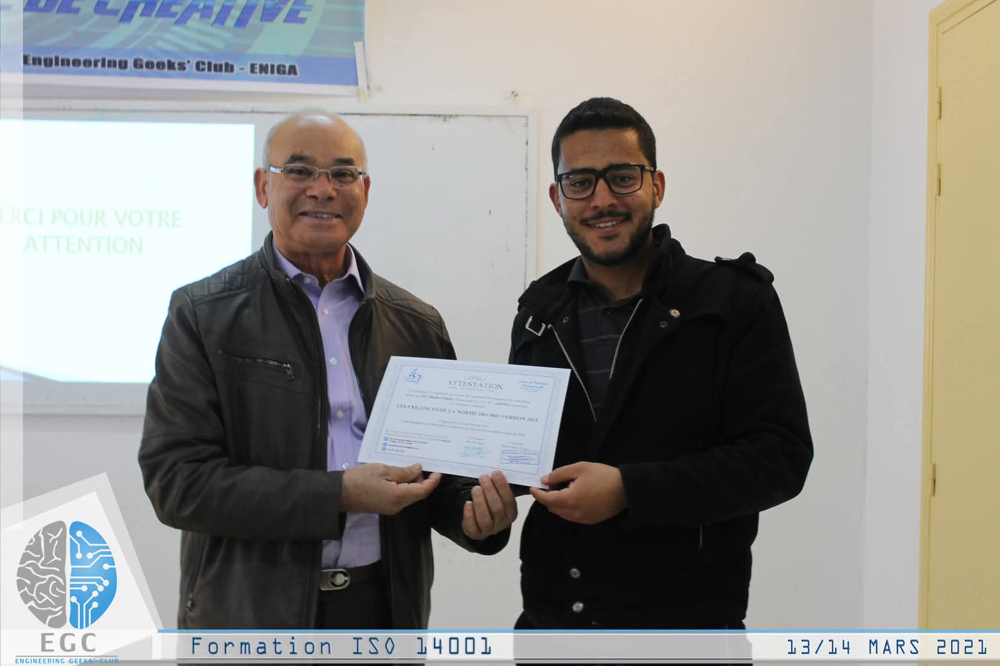
- Organized and attended Formation ISO 14001:2015 — the second session of the EGC QHSE training cycle, delivered over 2 days by certified auditor Mr. Ali Ouni.
- Covered the full ISO 14001:2015 structure: organizational context, environmental aspects and impacts identification, legal obligations, objectives planning, operational control, and performance evaluation (Chapter 9).
- Studied surveillance, measurement, analysis, and internal audit methodology — the core tools used by certified industrial facilities to monitor and improve their environmental management systems.
- Received a professional attestation certificate personally issued by trainer Mr. Ali Ouni — a formal credential validating completion of both ISO 9001 and ISO 14001 training content.
- Completed two of the four planned QHSE sessions as EGC President — covering two of the most internationally recognized management system standards: ISO 9001 (Quality) and ISO 14001 (Environment).
QHSE
Formation ISO 9001:2015 — Organizing a Professional QHSE Training Cycle
Engineering Geeks Club (EGC) — QHSE Training Series, February 27–28, 2021
As EGC President, I didn't just manage the club — I pushed it into new territory.
In early 2021, my team and I planned a full QHSE training cycle
of four sessions, bringing professional-level quality management education directly
to engineering students. The series was ambitious — and then COVID-19's second wave
hit, cutting us to two completed sessions.
The first — and most impactful — was Formation ISO 9001:2015,
delivered by certified auditor and trainer Mr. Ali Ouni. Over two
full days, 25+ engineering students were introduced to the 10 clauses of the
ISO 9001:2015 standard, the PDCA cycle (Plan-Do-Check-Act),
process-based quality management, traceability requirements, customer satisfaction
frameworks, and nonconformity handling.
Organizing this meant securing the expert, managing the venue, handling logistics
for two days of sessions — and making sure that what students received was genuinely
useful, not just another lecture. That's what I was most proud of: the quality of
the content matched the standard being taught.
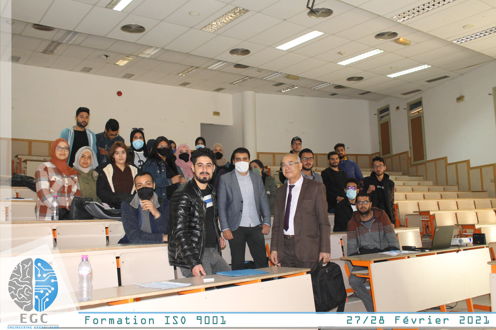
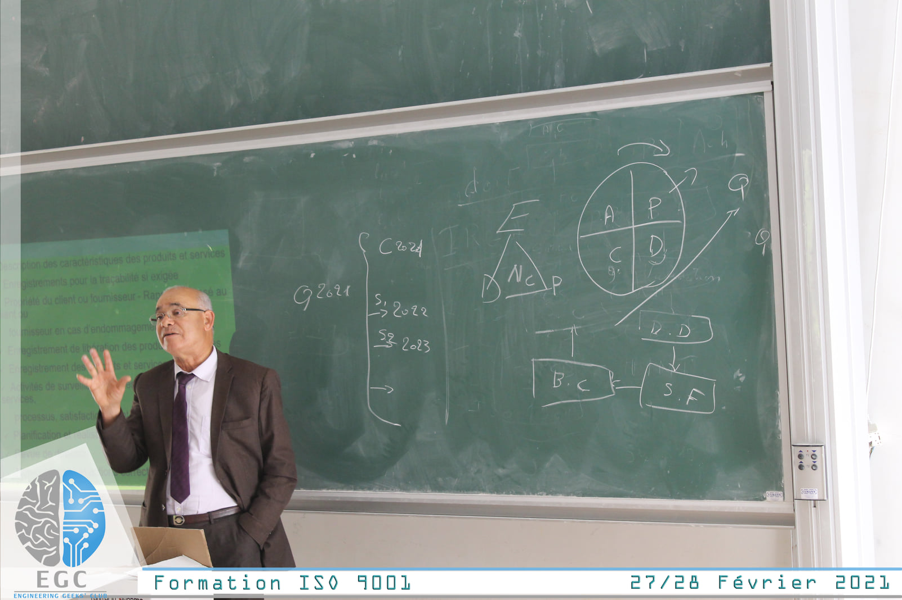
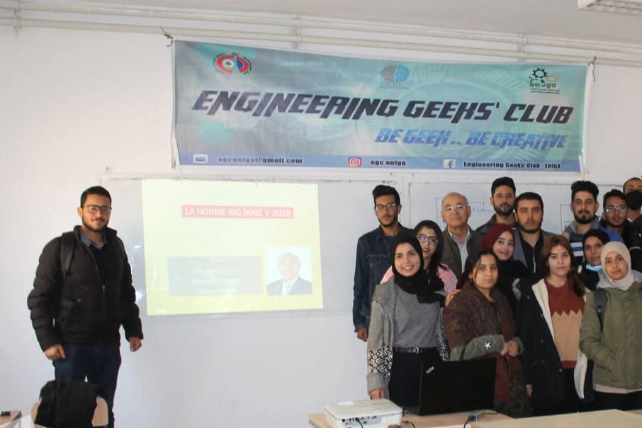
- Planned and organized a 4-session QHSE training cycle as EGC President — bringing professional quality management education to engineering students for the first time in the club's history.
- Secured and coordinated with Mr. Ali Ouni, a certified ISO auditor and trainer, to deliver a 2-day professional training on ISO 9001:2015 requirements.
- Training covered: the 10 clauses of ISO 9001:2015, PDCA cycle, process-based approach, traceability, customer satisfaction requirements, corrective actions, and nonconformity management.
- Managed all event logistics for a 25+ attendee, 2-day training: venue setup, participant coordination, catering, and session scheduling across both days.
- Demonstrated as EGC President that a student engineering club can deliver content of professional industrial standard — bridging the gap between academic theory and real-world quality practice.
Training
Initiation Robotique 1.0 — Teaching What I Once Learned
Engineering Geeks Club (EGC) — Robotics Initiation Workshop, January 6, 2021
Two years earlier, I was the new member sitting at a desk, learning how to wire
a motor driver for the first time. In January 2021, as EGC President, I helped
organize and deliver Initiation Robotique 1.0 — the club's first
official robotics training for new members — and served as assistant to
the main trainer.
The workshop covered the full embedded systems stack from scratch: Arduino
programming, breadboard prototyping, sensor integration (ultrasonic, IR), servo
control, and motor driving — everything a beginner needs to go from zero to a
moving, sensing robot. The demonstration model was a fully finished
4-wheel autonomous robot built by the club — used to show
new members exactly what they could build by the end of the season.
There is something different about teaching. It forces you to understand things
more deeply than just doing them — because when a student asks "why does this
work?", you have to actually know the answer. That shift from learner to mentor
sharpened my own fundamentals more than any solo project ever could.
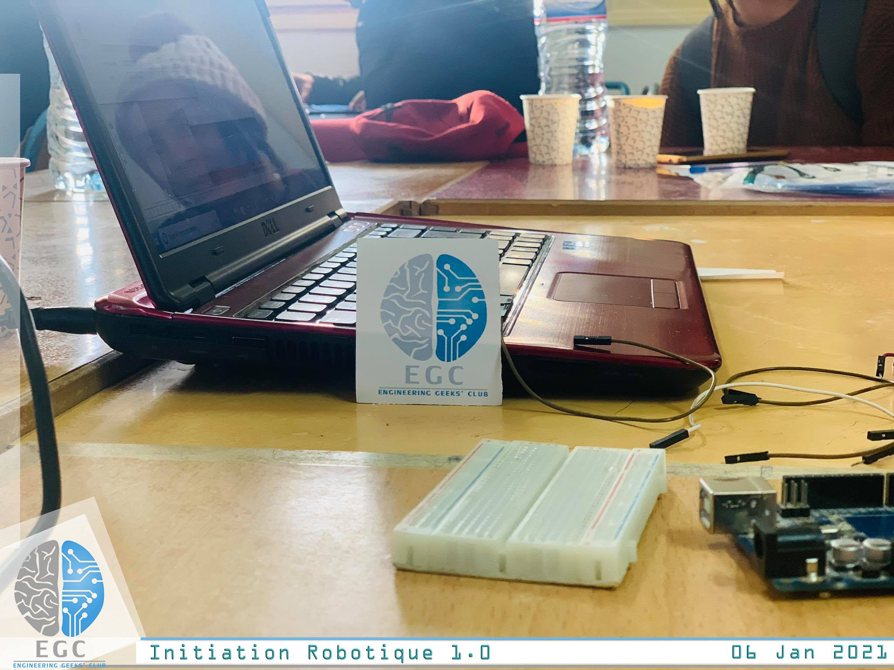
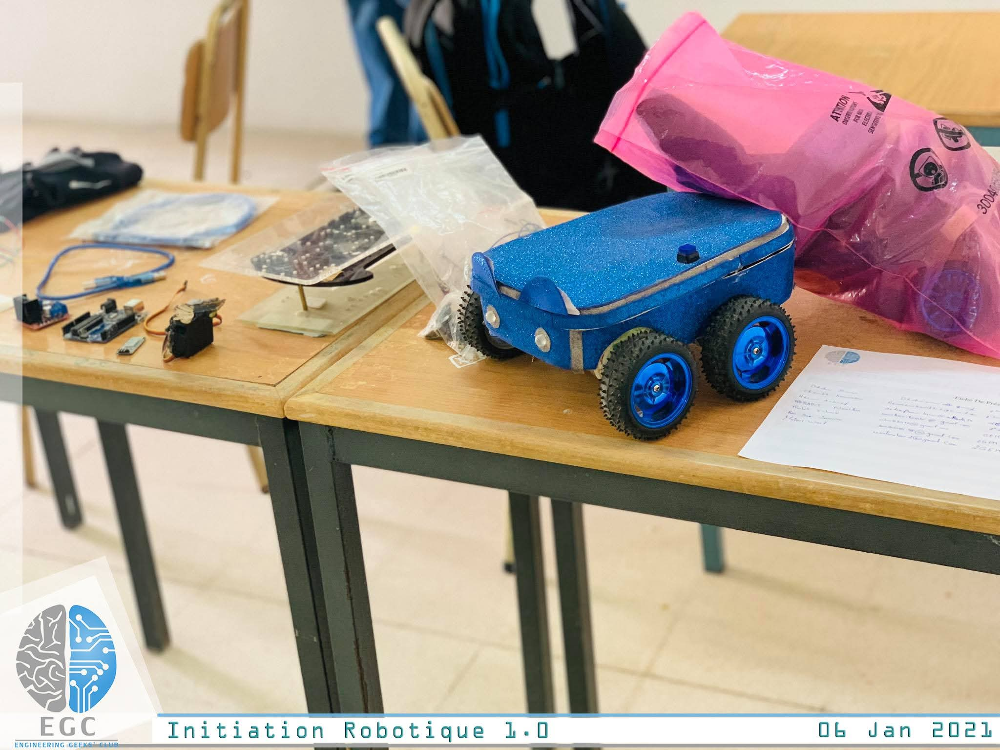
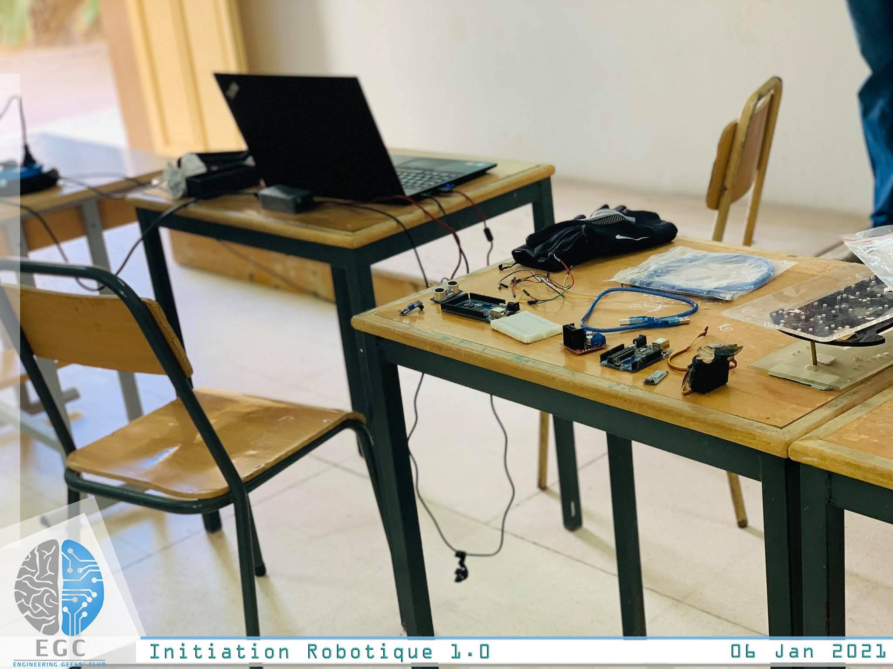
- Co-organized and delivered Initiation Robotique 1.0 as EGC President — the club's first structured robotics training for new members, covering Arduino programming through to a working autonomous robot.
- Served as assistant trainer — supporting the main trainer in explaining concepts, guiding hands-on exercises, and troubleshooting student builds in real time.
- Covered a full embedded systems curriculum: Arduino IDE setup, digital I/O, PWM control, ultrasonic distance sensing, IR sensors, servo actuation, and DC motor control via L298N driver.
- Used a finished 4-wheel autonomous robot as the demonstration model — giving new members a concrete, motivating target to work toward over the season.
- Completed the full cycle: from competition participant (2019) → club president (2020) → assistant trainer (2021) — demonstrating consistent growth and a commitment to giving back to the next generation of engineers.
President
Elected President — Engineering Geeks Club (EGC)
Engineering Geeks Club — Academic Year 2020/2021
In 2019, I was competing under the EGC banner. In 2020, I was leading it.
After two years of robotics competitions, technical trainings, and club
activities organized by the Engineering Geeks Club, I was
elected as its President for the 2020/2021 academic year —
the top leadership position of the club that first put a soldering iron and
a Bluetooth controller in my hands.
Taking over meant building and leading a full executive team: Vice President,
Secretary General, Media Responsible, Robotics Responsible, Treasurer, and
coordinators across Energetics, Electromechanics, and Chemistry — nine people,
nine roles, one shared mission. Every event, every training session, every
competition the club organized that year was my responsibility to initiate,
delegate, and see through.
Leadership at this level is less about being the smartest person in the room
and more about making sure the right people are in the right roles — and then
trusting them. It's a lesson I carry into every technical project I run.
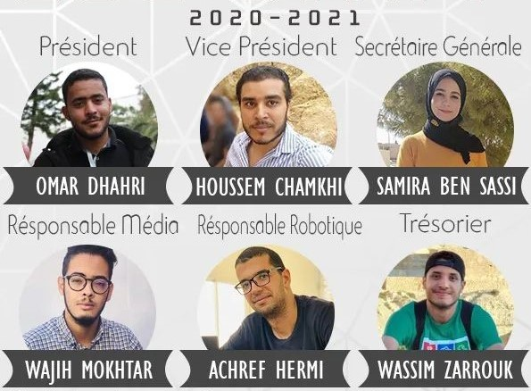
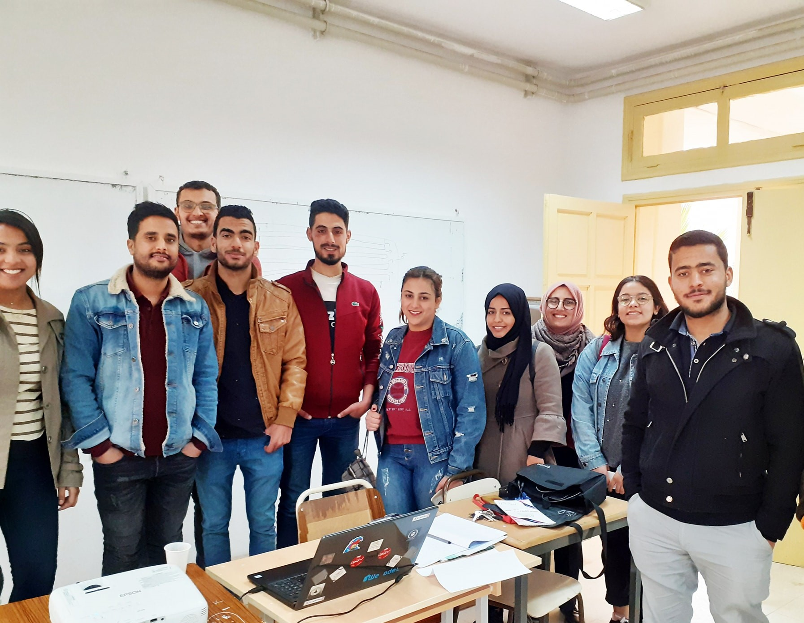
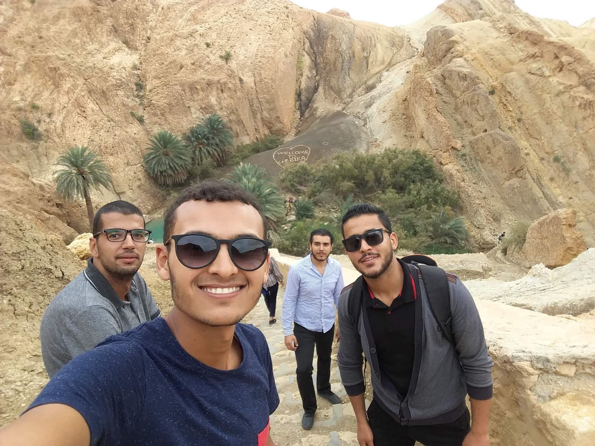
- Elected President of the Engineering Geeks Club (EGC) for academic year 2020/2021 — leading a 9-member executive team spanning technical, administrative, and communication roles.
- Built and structured the full club executive board: appointing and coordinating the Vice President, Secretary General, Media Responsible, Robotics Responsible, Treasurer, and three departmental coordinators.
- Oversaw the planning and execution of all club activities for the year — technical workshops, robotics training sessions, inter-club events, and member recruitment campaigns.
- Managed the club's dual identity as both a technical engineering community (robotics, electromechanics, electronics) and a student leadership platform — balancing both missions throughout the year.
- Grew from club competitor (2019) to club president (2020) in a single year — a progression that reflects consistent commitment, visible leadership, and the trust of peers.
Training
Formation Révision Moteur — Complete Engine Overhaul Training
Engineering Geeks Club (EGC) — 20+ Hour Practical Workshop, March 7–8, 2020
An automation engineer who understands only electronics is half an engineer.
Machines move because of mechanics — and in March 2020, I committed 20+ hours
to understanding exactly how the most complex mechanical system in everyday life
works: the internal combustion engine.
The Formation Révision Moteur, organized by the Engineering Geeks
Club, was a full hands-on overhaul training — starting with theory: thermodynamic
cycles, P-V diagrams, combustion physics, valve timing, and the precise role of
every bolt and component. Then came the real work: a complete disassembly
of a car engine — cylinder head, pistons, connecting rods, crankshaft, timing belt,
camshaft, oil pump — everything laid out, identified, and explained one piece at a time.
Then we put it all back together. In the correct order. With the correct torque.
And started it. Successfully. That moment — hearing the engine fire up after we
had reduced it to individual parts — is one of the most satisfying things I have
experienced as an engineering student. It confirmed something important: the best
automation engineers are not afraid to get their hands dirty.
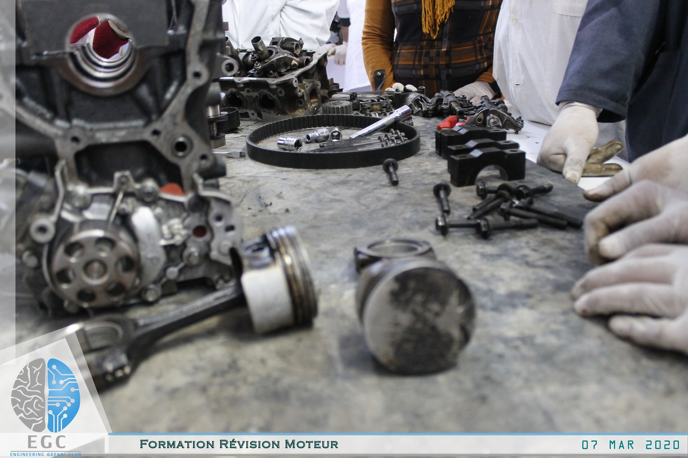
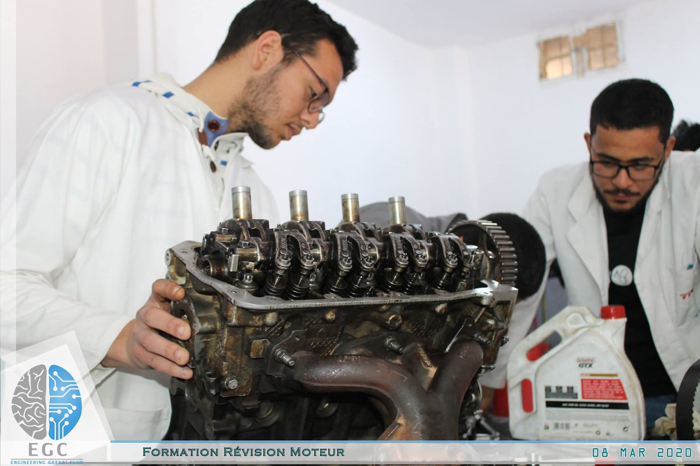
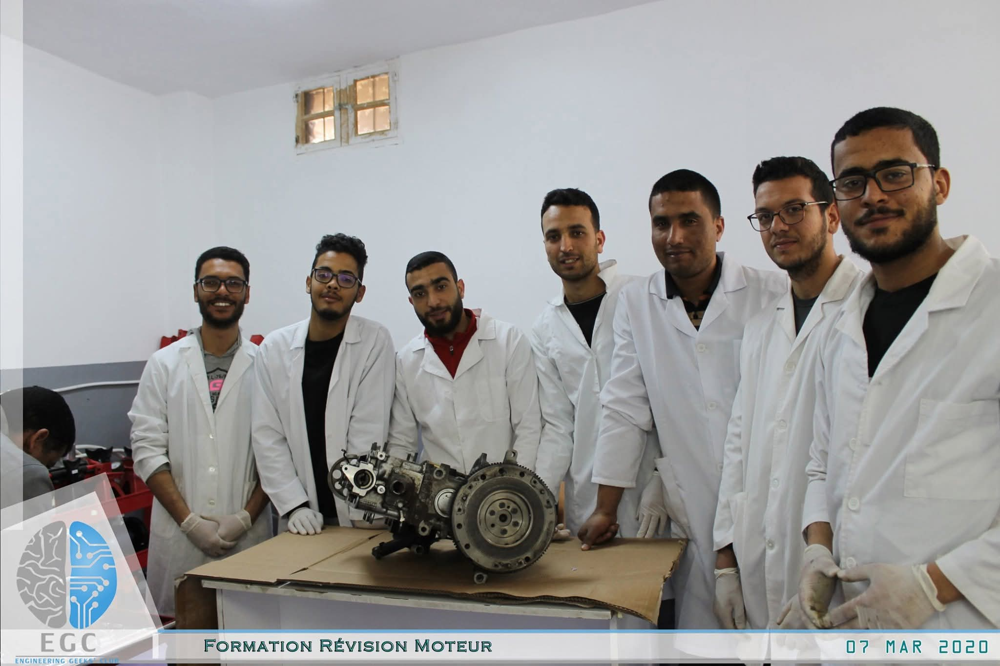
- Completed a 20+ hour practical training on vehicle engine overhaul — covering theory (thermodynamic cycles, P-V diagrams, combustion physics) and full hands-on disassembly/reassembly of a real car engine.
- Performed a complete engine teardown — removing and identifying every component: cylinder head, pistons, connecting rods, crankshaft, timing belt, camshaft, oil pump, and all associated hardware in correct sequence.
- Learned the function, position, and assembly order of every engine component — including torque specifications, bolt sequencing, and gasket placement critical to a successful rebuild.
- Participated in the full engine reassembly and successful cold start — confirming correct mechanical fit, valve timing, and oil circulation before the engine fired.
- Passed a theoretical assessment at the end of the training — validating understanding of engine operation principles and maintenance procedures.
Sfax
ENIS Robots 3.0 — Upgraded, Homologated & Back in the Arena
Engineering Geeks Club (EGC) — National Robotics Competition, Sfax
Two months after ENICarthage, we were back — but not with the same robot.
Every competition teaches you something, and what ENICarthage taught us was clear:
the robot needed to do more than move. ENIS Robots 3.0 had strict
homologation requirements, and to qualify, our robot had to be capable of
picking up an object from a 15 cm elevation and delivering it
precisely to unlock a gate — then continue navigating an obstacle course to the finish.
So we engineered an upgrade: a servo-actuated elevator gripper arm
mounted on the front of the chassis — controllable in real time, precise enough to
grab a target object and release it on command. The robot also got a structural
rebuild: reinforced aluminum chassis panels, blue LED headlights for visibility,
and cleaner internal wiring to survive the abuse of competition terrain.
The challenge itself was a timed run — not just obstacle avoidance,
but a full sequence: approach the elevated object, grip it, lower it, deliver it to
the gate trigger, watch the gate open, then race through the remaining course before
time runs out. Every second counted. Every mechanism had to work on the first try.
That's the kind of pressure that turns builders into engineers.


- Engineered a servo-actuated elevator gripper arm that could pick up an object from a 15 cm elevated platform and deliver it to a target zone — a required homologation feature for competition entry.
- Rebuilt the robot chassis with reinforced aluminum panels and improved internal layout, addressing structural failures observed during the previous competition.
- Integrated blue LED headlights and cleaner cable routing — improving both aesthetics and reliability under competition stress.
- Executed a full timed sequence under competition pressure: object pickup → delivery → gate trigger → obstacle navigation → finish line, with all mechanisms required to function on the first attempt.
- Learned the critical difference between a robot that works on a bench and one that performs reliably in a live, timed, high-stakes environment.
Kairouan
National Forum for Structures — Training & Institutional Governance
Association Nationale des Clubs Universitaires — Kairouan, December 2019
This wasn't a competition or a celebration — it was a working session at the
highest level of ANCU's internal structure. The National Forum for Structures
brought together responsible members from every regional bureau across Tunisia
to address one of the most critical challenges any growing organization faces:
how do you keep a national network aligned and functional?
The forum tackled the communication protocol between the national executive board
and all regional bureaus — defining roles, responsibilities, and reporting structures
for every position: Marketing Responsible, Training Responsible, Financial Responsible,
Regional Coordinator, and more. It was organizational engineering — not with wires
and sensors, but with people, processes, and governance frameworks.
As the newly appointed Regional Delegate of Gafsa, I was among the responsible
members receiving and contributing to these governance sessions — including a
dedicated workshop on organizational follow-up (المتابعة التنظيمية),
covering how regional bureaus track activities, report upward, and stay aligned
with the national board's direction. It was the kind of structured thinking I
recognized immediately: clear inputs, defined processes, measurable outputs —
the same logic that runs a good automation system, applied to people and organizations.
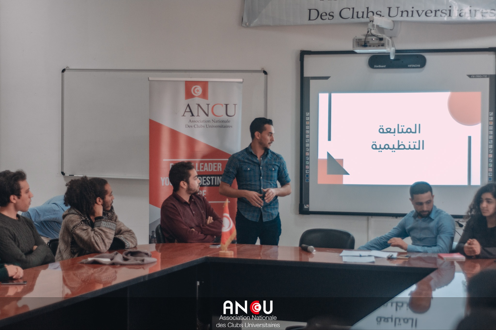
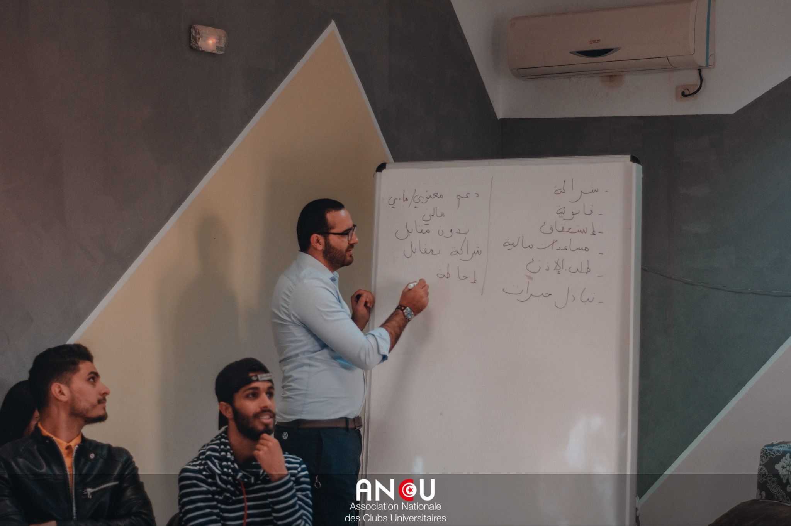
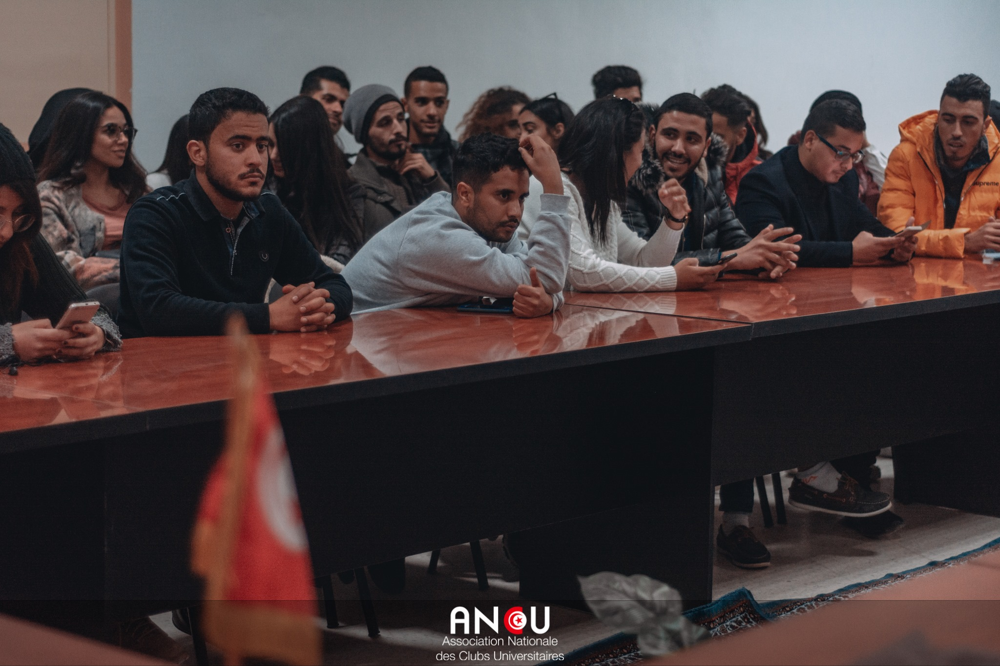
- Participated in the ANCU National Forum for Structures — a governance assembly bringing together responsible members from all regional bureaus across Tunisia to align communication protocols and role definitions.
- Attended a structured governance workshop on organizational follow-up (المتابعة التنظيمية) — covering tracking mechanisms, reporting structures, and accountability frameworks between national and regional levels.
- Contributed to defining the communication protocol between the national executive board and all regional bureaus — a structural design exercise that directly impacted how the entire association operates.
- Participated in training sessions for newly appointed regional bureau responsibles — covering all key roles: Marketing, Training, Financial, and Regional Coordination.
- Applied systems thinking to organizational management: identifying communication gaps, defining clear interfaces between roles, and establishing follow-up procedures — the same structured mindset that drives good automation engineering.
Carthage
ENICarthage Robots 5.0 — First Steps in Competitive Robotics
Engineering Geeks Club (EGC) — National Robotics Competition, Tunis
Every engineer remembers their first competition. Mine was ENICarthage Robots 5.0,
organized by the Engineering Geeks Club at ENIC Carthage — one of Tunisia's most
anticipated student robotics events. Dozens of teams, a packed outdoor arena, and
hundreds of eyes watching every move your robot makes.
Our entry was a Bluetooth-controlled ground robot, built from scratch:
a custom chassis, DC motors with rubber-grip wheels, a motor driver, and an Arduino
brain — all commanded in real time from a smartphone app. The arena itself was a
challenge course designed to test navigation, precision, and control under pressure —
ramps, gravel zones, obstacles, and tight corridors that punished any sloppy driving.
The robot took hits. The chassis cracked. The wiring held. And standing there in front
of that crowd, phone in hand, watching something I built with my own hands move through
that course — that was the moment I understood why engineers build things.
Not just to make them work, but to make them perform.


- Designed and assembled a ground robot from scratch — chassis fabrication, motor mounting, electronics integration, and wiring — with zero budget for mistakes on competition day.
- Implemented Bluetooth serial communication between an Arduino microcontroller and an Android smartphone, enabling real-time directional control of the robot.
- Configured a DC motor driver (L298N) for bidirectional wheel control — forward, reverse, left and right turns — with responsive speed handling.
- Navigated a multi-terrain competition course including ramps, gravel, and obstacle zones under time pressure and in front of a live audience.
- First hands-on experience with competitive engineering: designing for robustness, debugging under pressure, and performing in front of a crowd — skills no classroom teaches.
Gafsa
Official Regional Delegate — ANCU Gafsa Bureau
Association Nationale des Clubs Universitaires — Appointed Nov 15, 2019
Some milestones you earn through competition. This one came through trust.
On November 15, 2019, the Executive Board of the
Association Nationale des Clubs Universitaires (ANCU) officially
appointed me as the President of the Regional Bureau of Gafsa —
the legal representative of the association for the entire Gafsa region throughout
the 2019/2020 academic year.
The appointment came with a formal letter, an official stamp, and a responsibility:
to represent ANCU's mission across university clubs in the region, coordinate
regional activities, and serve as the bridge between local student clubs and the
national executive board.
To mark the occasion, I announced the appointment live on national radio
— sitting across from microphones, speaking to an audience far beyond any campus.
It was a reminder that an engineer's voice matters outside the lab too — and that
leadership, when it's official, carries real weight.
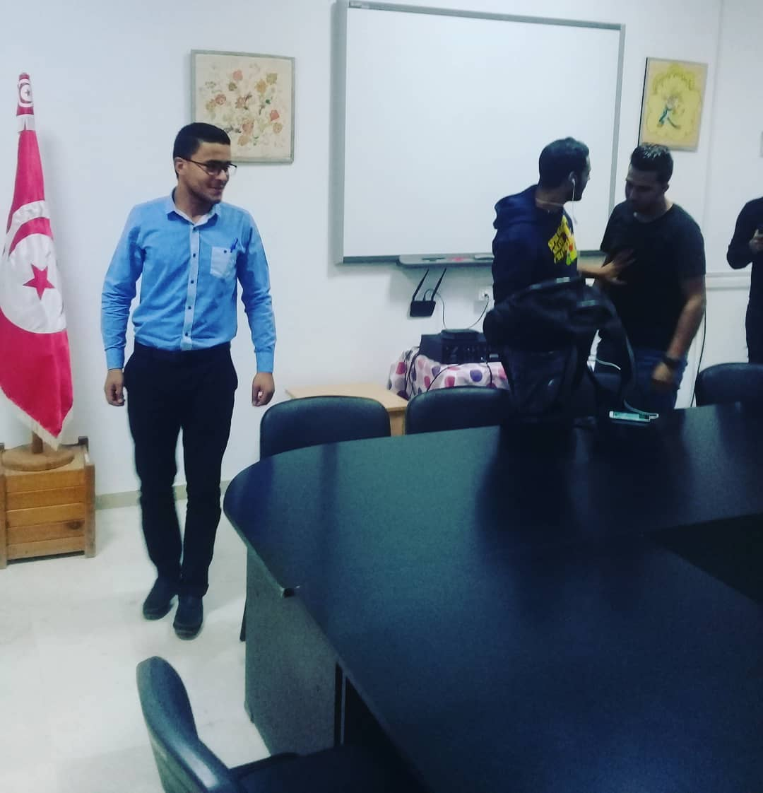
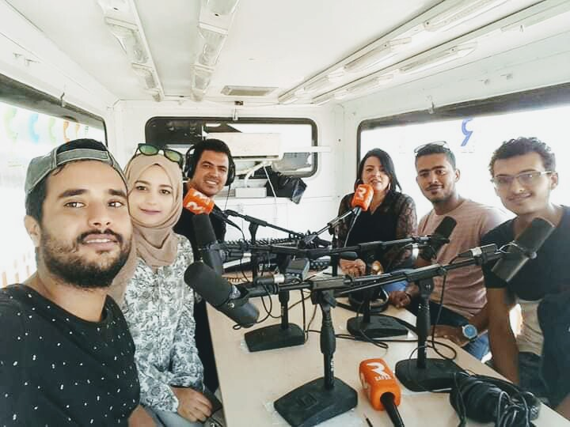
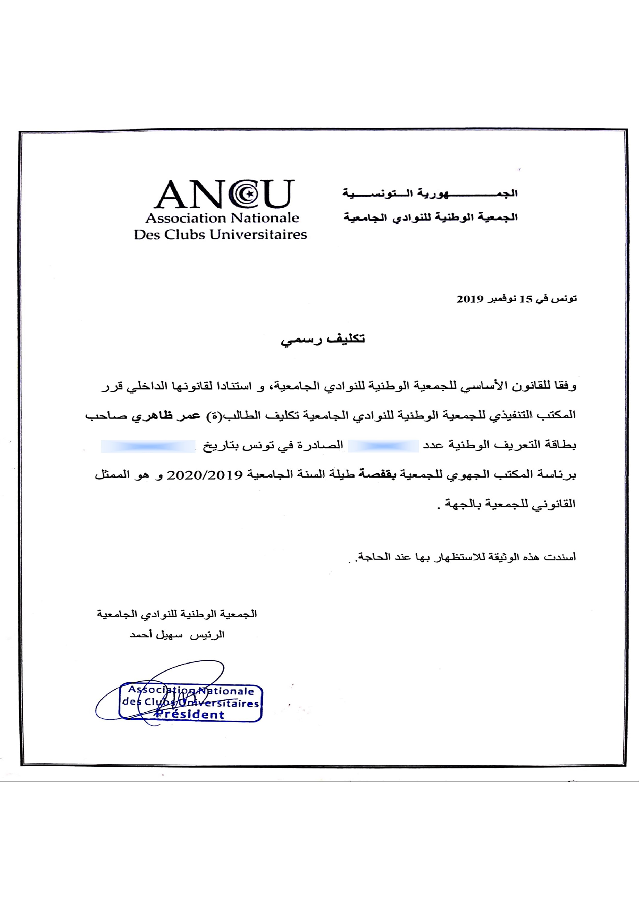
- Officially appointed by the ANCU Executive Board as President of the Regional Bureau of Gafsa — the legal representative of the national association for the region throughout academic year 2019/2020.
- Served as the institutional bridge between university clubs across the Gafsa region and ANCU's national executive structure — coordinating activities, communications, and regional representation.
- Announced the appointment live on national radio, addressing a broad public audience and representing ANCU's mission at a national media level.
- Managed regional responsibilities in parallel with engineering studies and robotics competitions — demonstrating the ability to lead across multiple commitments simultaneously.
- Backed by an official appointment letter bearing the signature and stamp of the ANCU national president — a formal credential of trust and institutional responsibility.
Tunisia
National Student Forum V.3 — Leading Beyond the Lab
Association Nationale des Clubs Universitaires (ANCU) — Organizing Committee
Engineering is not only about machines — it's about people, coordination, and the
ability to make things happen under pressure. The National Student Forum V.3,
organized by the Association Nationale des Clubs Universitaires (ANCU), was where
I proved that to myself.
As a member of the organizing committee, I was part of the team
responsible for bringing together students from across Tunisia for one of the country's
most active student leadership platforms. The forum covered sessions on personal
development, civic engagement, and inter-club collaboration — and behind every smooth
session was hours of logistics, communication, and teamwork.
Taking the microphone in front of a hall full of peers is its own kind of pressure —
different from a robotics arena, but just as real. It taught me that the skills that
make a great engineer — clarity, preparation, staying calm when things go off-script —
are the same skills that make a great leader.
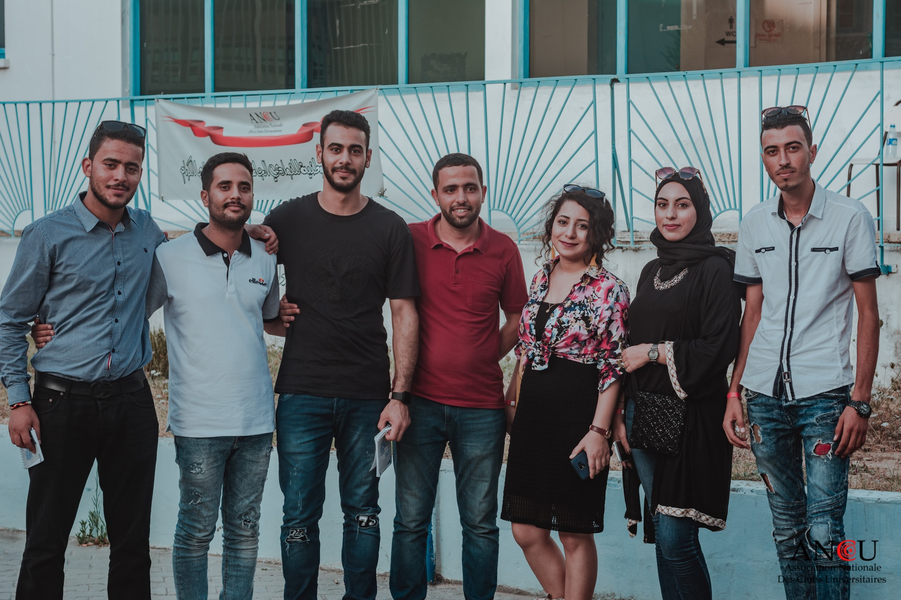
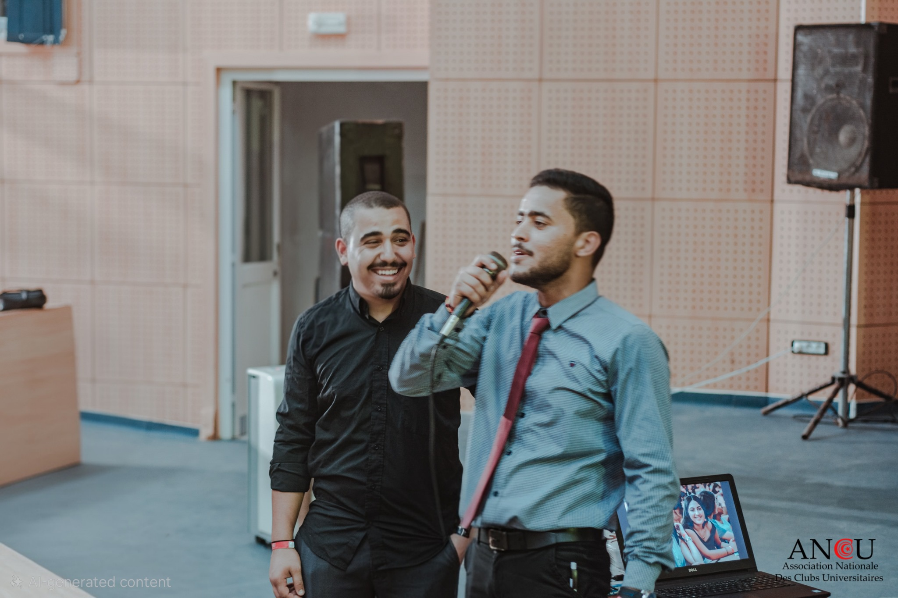
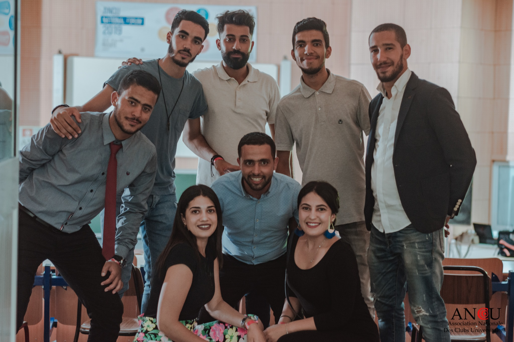
- Served as an organizing committee member for the National Student Forum V.3 — coordinating logistics, scheduling, and on-site operations for a multi-session national event.
- Hosted and animated forum sessions as a live MC, addressing a national audience of student delegates from universities across Tunisia.
- Collaborated with a multidisciplinary team of students from different institutions, developing cross-team communication and shared responsibility under deadline pressure.
- Gained firsthand experience in large-scale event management: participant coordination, space setup, speaker management, and real-time problem solving.
- Reinforced the principle that technical excellence alone is not enough — great engineers communicate clearly, lead with confidence, and build trust with the people around them.
Mashrou3i
HP LIFE Entrepreneurship Training — Visionary Thinking & Innovation Challenge
Mashrou3i / HP Foundation / USAID / ONUDI — 6-Day Program, March 2019
In March 2019, I was selected to participate in a 6-day entrepreneurship
training program organized by Mashrou3i — a national
initiative supported by the HP Foundation, USAID,
and the United Nations Industrial Development Organization (ONUDI).
The program brought international expertise directly to Tunisian young engineers
and entrepreneurs.
The trainer was Mr. Louis Jacques Filion — a professor of
entrepreneurship at HEC Montréal, Canada, and one of the
world's leading researchers on visionary entrepreneurship and SME management.
He flew from Canada specifically to deliver this program. The curriculum covered
visionary and entrepreneurial thinking, opportunity identification, business
model design, and innovation frameworks — culminating in a live
challenge where each participant had to elaborate and pitch an
innovative project idea.
Being in a room with that level of expertise — international faculty, UN-backed
funding, real competitive pressure — was a perspective shift. It taught me that
engineering problems and business problems are solved the same way: identify the
need, design the solution, validate it, and iterate.

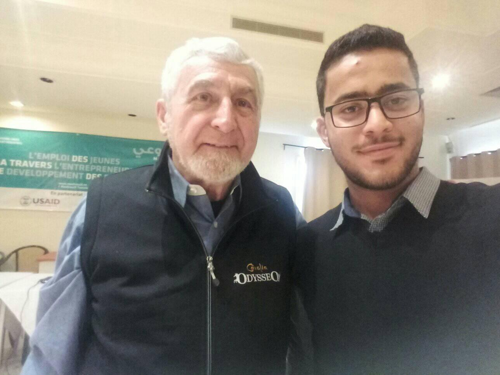
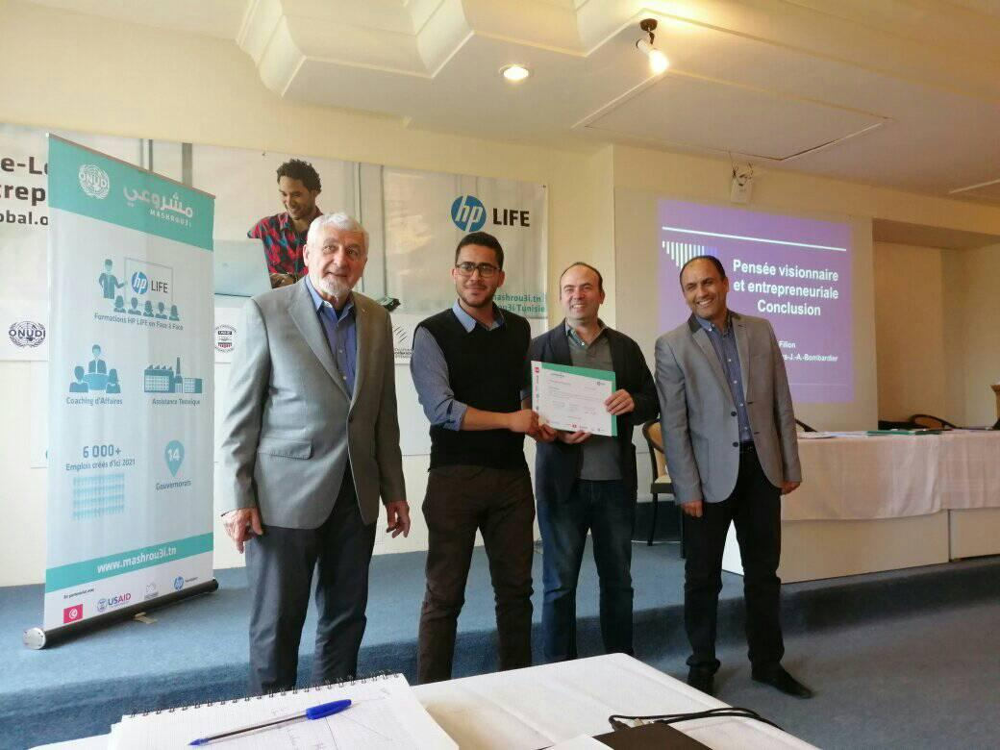
- Selected to participate in a 6-day HP LIFE entrepreneurship program organized by Mashrou3i — backed by HP Foundation, USAID, and ONUDI — targeting high-potential young engineers and entrepreneurs across Tunisia.
- Trained directly by Prof. Louis Jacques Filion of HEC Montréal — a world-renowned expert in visionary entrepreneurship who traveled from Canada to deliver the program.
- Covered entrepreneurial frameworks including visionary thinking, opportunity identification, value proposition design, business model canvas, and innovation methodology.
- Participated in a live innovation challenge — elaborating and presenting an original innovative project idea under competitive conditions in front of trainers and program officials.
- Received an official HP LIFE certificate of completion, presented by the program panel — a credential recognized across 14 Tunisian governorates and backed by international institutions.
Congress
ANCU First General Congress — Delegate & Regional Media Representative
Association Nationale des Clubs Universitaires — Sidi Bouzid Regional Bureau
While most engineering students spend their first year focused purely on coursework,
I was already standing on a national stage. In December 2018, I
participated as an official delegate in the First General Congress of ANCU
— the founding national assembly of the Association Nationale des Clubs Universitaires,
bringing together student representatives from across Tunisia.
My role went beyond simply attending. As the Regional Media Responsible
for the Sidi Bouzid bureau, I was the official voice and representative of my region
at the national level — responsible for communication, visibility, and advocating for
the interests of my local student community in a formal institutional setting.
Taking the microphone on that stage, in front of delegates from every region of the
country, was the moment I understood what representation really means. You're not
speaking for yourself — you're carrying the voice of everyone who sent you there.
That responsibility shaped how I approach every role I take on, technical or otherwise.
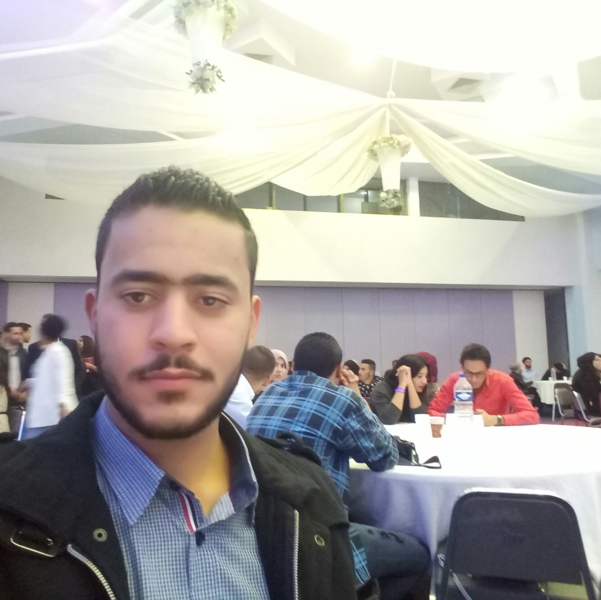
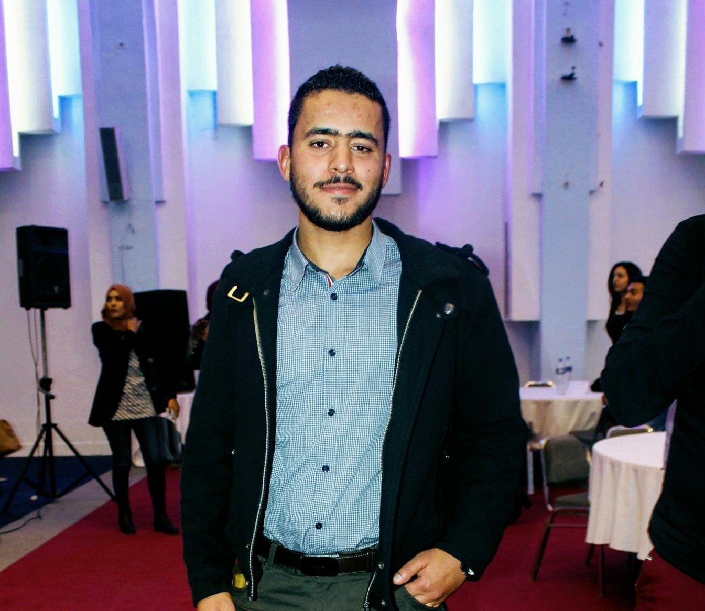
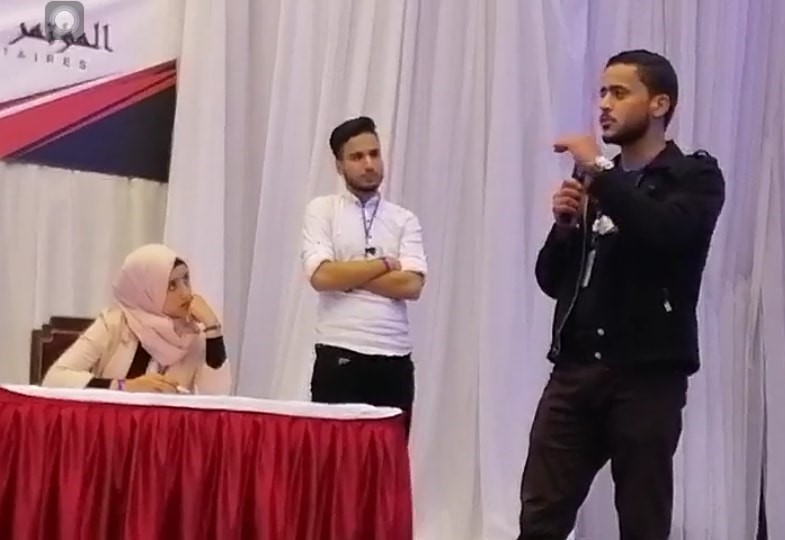
- Participated as an official delegate representing the Sidi Bouzid regional bureau at the First General Congress of ANCU — the founding national assembly of the association.
- Held the role of Regional Media Responsible for the Sidi Bouzid bureau — managing communication, representation, and visibility of the region at the national level.
- Addressed the national congress on stage with a microphone in front of delegates from every region in Tunisia — advocating for the interests of the Sidi Bouzid student community.
- Built a national network of student leaders and institutional contacts across Tunisia's university club ecosystem — connections that later supported the regional delegate role in Gafsa.
- Demonstrated early leadership maturity: stepping into a formal institutional role in parallel with first-year engineering studies, balancing academic and civic responsibilities.
Creathon
First Hackathon — SBZ Creathon 2018 — Smart City Emergency & Security System
Association RAWAFED · ISET Sidi Bouzid — October 19–21, 2018 · 28h non-stop
Every journey has a starting point. Mine, in the world of competitive innovation,
was a cold October night at ISET Sidi Bouzid — 28 hours, 7 teams, and one challenge:
design a sustainability project for the municipality. The jury was
not a panel of students. It was the municipality president, the
university director, and the event organisers — people who would
ask hard questions about feasibility, budget, and real-world impact.
Our team's answer was CITY — a smart city security and emergency
response concept built around IoT, GPS positioning, and a city-wide map mesh.
The idea was rooted in a real and underaddressed problem: undeclared accidents,
medical emergencies on the street, and slow response times in urban areas. Our
system proposed placing connected sensors and nodes across the city to detect
anomalies — a person down, a crime in progress, an unattended accident — and
route the alert to the nearest emergency service automatically, cutting response
time dramatically. The citizen becomes both a data source and a beneficiary of
the network. We backed it up with a mobile application wireframe showing the
city map interface and the alert routing logic.
We didn't win. The challenge was vast, the competition fierce, and we were
students building our first serious prototype concept under pressure. But walking
out of that 28-hour sprint, I understood something that no classroom had taught me:
the best way to learn what you don't know is to commit to solving a problem that
requires it. That first hackathon planted a seed that would grow — through
workshops, internships, and eventually a national podium finish — over the next
six years.
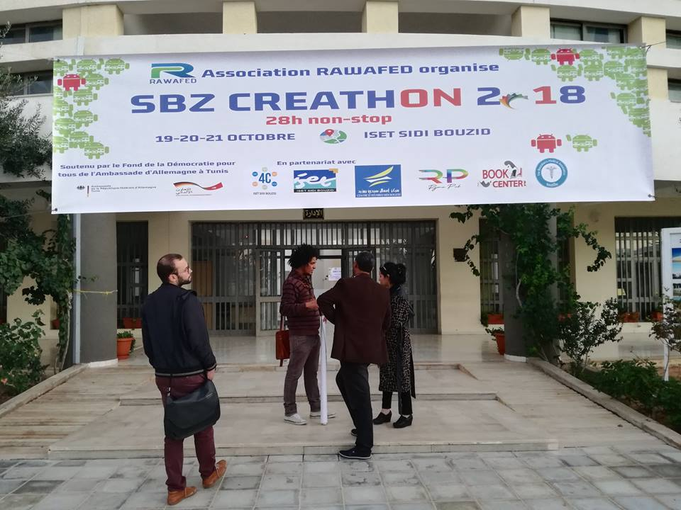
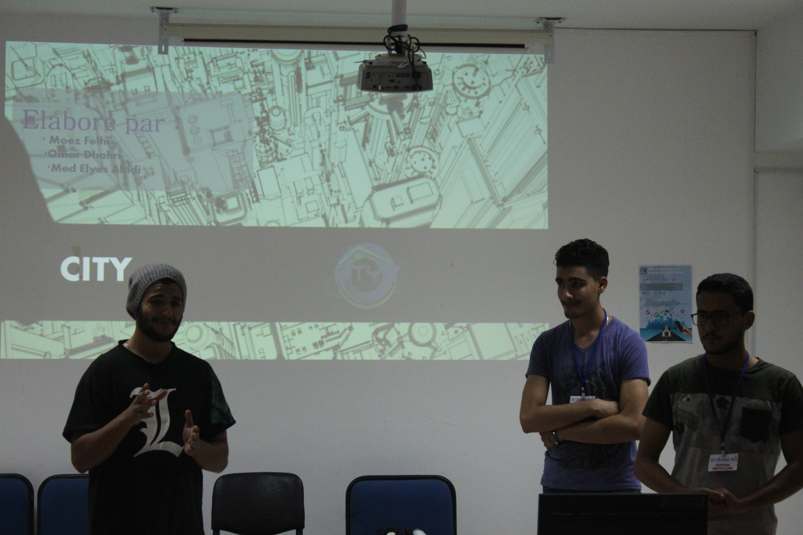
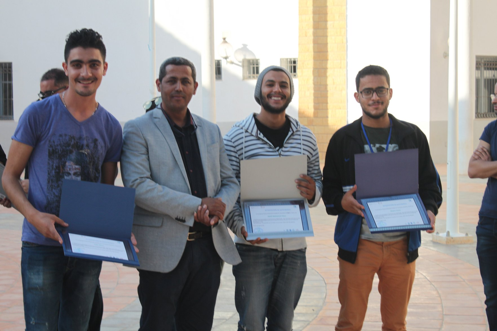
- Participated in SBZ Creathon 2018 — a 28-hour non-stop hackathon organized by Association RAWAFED at ISET Sidi Bouzid, supported by the German Embassy in Tunisia, challenging 7 teams to develop sustainability solutions for local municipalities.
- Designed CITY — a smart city IoT concept for collective security and emergency response, using GPS positioning and a city-wide sensor mesh to detect and route alerts for accidents, medical emergencies, and security incidents to the nearest services in real time.
- Developed a mobile application wireframe showing the city map interface, alert routing logic, and citizen interaction model — translating the IoT architecture into a tangible, presentable user experience within the 28-hour window.
- Pitched the concept to a formal jury composed of the municipality president, university director, and event organisers — receiving structured feedback on feasibility, urban implementation challenges, and system scalability.
- Competed against 6 other teams in a high-pressure, cross-disciplinary environment — gaining first exposure to competitive innovation, rapid prototyping under time constraints, and public pitch delivery before institutional decision-makers.
- Identified this event as the foundational experience that sparked a sustained interest in IoT-based innovation and hackathon culture — a trajectory that led directly to a 2nd place national finish at the Promise Hackathon in 2024.
Year
First Contact with Industrial Automation
ISET Sidi Bouzid — Festo MPS Pneumatic & PLC Training Lab
Before any simulation software, before TIA Portal on a laptop — there was this:
a real Festo Modular Production System bolted to a lab bench,
hissing with compressed air and alive with sensor signals. This is where my hands
first touched industrial automation.
The task was to program and control a Pick & Place station —
built from pneumatic cylinders, solenoid valves, pressure regulators, and proximity
sensors, all coordinated through a PLC running Siemens STEP 7 and
programmed in Grafcet (SFC). The station had to pick a workpiece,
transfer it via a gantry-style XY axis, and place it precisely at a target position —
entirely autonomously.
It sounds straightforward — until you're staring at 40+ pneumatic fittings and a
control panel that demands you understand every I/O address before the first cylinder
extends. That pressure — the real kind — taught me what no simulation ever could:
how to read a system before you dare command it.


- Programmed a full Pick & Place sequence using Grafcet (SFC) — coordinating pneumatic cylinder extensions, gripper actuation, and sensor feedback in a safe sequential flow.
- Wired and validated all digital I/O connections between the PLC and Festo MPS station, mapping physical sensor/actuator addresses to STEP 7 symbol table entries.
- Understood pneumatic circuit logic: air supply management, pressure regulation, directional control valves, and double-acting cylinder behavior under load.
- Debugged real timing conflicts between actuator strokes and sensor feedback — a critical skill that simulation software never exposes.
- First hands-on exposure to industrial control philosophy: fail-safe design, emergency stop logic, and controlled state transitions.